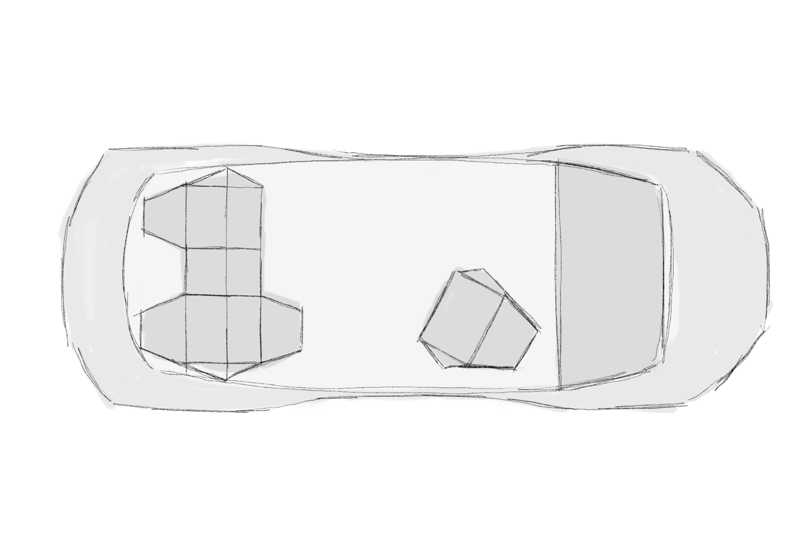
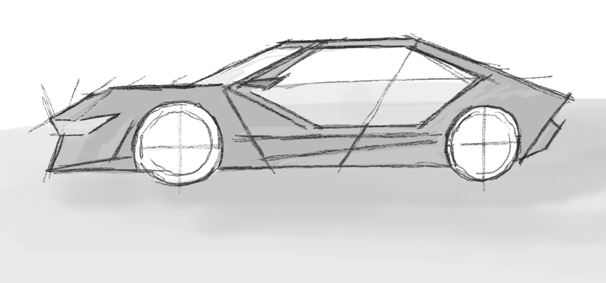
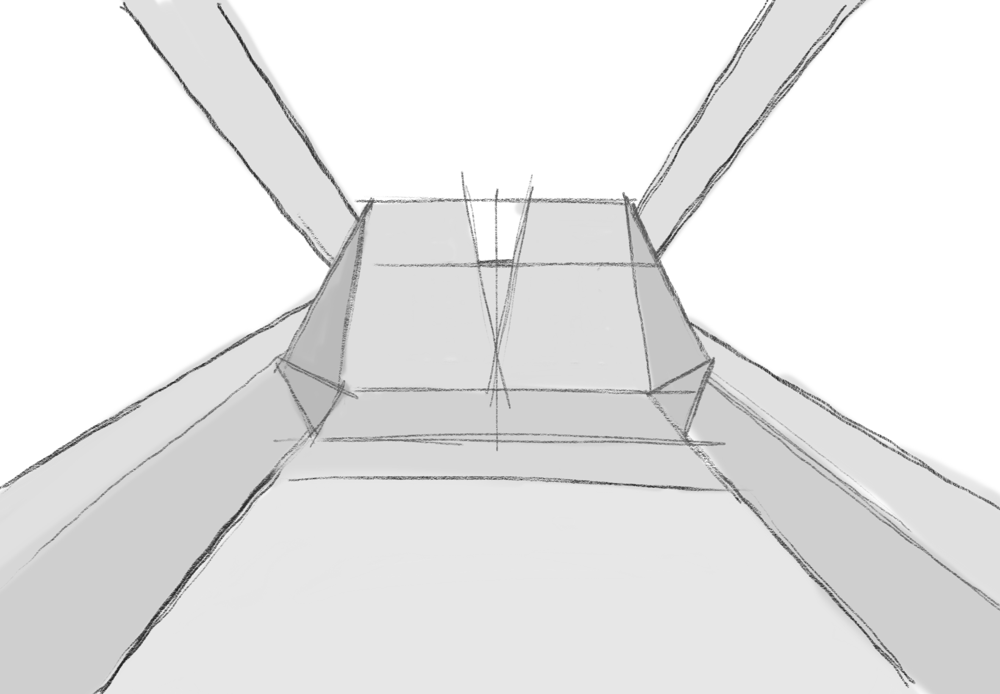
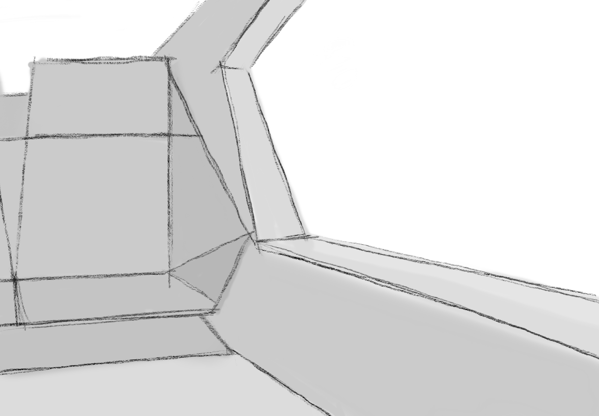

01Problem
No steering wheel, no driver
In a Level 5 autonomous future, driving is no longer the user's task. How can a personal smart device enable a seamless travel experience that adapts to individual needs and societal shifts?
A thesis project for Audi AG exploring how personal smart devices can become the core of the Level 5 autonomous driving experience. Specific content is confidential, so this page focuses on the process.
Trend research·Scenarios·Personas·Concept
Audi AG·Speculative Design
In a Level 5 autonomous future, driving is no longer the user's task. How can a personal smart device enable a seamless travel experience that adapts to individual needs and societal shifts?
Level 5 cars do not exist yet, so I designed from the future: the trends expected to shape everyday life by then and the travel situations passengers will find themselves in, with the personal smart device at the centre of the experience.
While details remain confidential, the concept places the personal smart device at the heart of the in-car experience, built for a passenger, not a driver. The focus group responded positively and named expanding it to further user groups as a valuable next step.
Familiar device interactions instead of a new system in the car, adapted to the autonomous travel context.
Level 5 vehicles do not exist yet, so the design space was defined through scenario-based thinking and the trends expected for that time.
Trade-off: the concept was closely tied to a specific persona, which the focus group pointed out itself.
There is no Level 5 car to test in, so key scenarios were shown as sketches and videos to a mixed group of experts.
I started with research into autonomous vehicle technology, passenger behaviour, and emerging mobility trends. The research also considered broader societal shifts expected in that timeframe: changing work patterns, new living situations, and shared mobility. Scenario-based thinking defined the design space and its constraints.

Based on the research, I identified the key trends expected to shape everyday life at the time Level 5 autonomy becomes reality. The concept was then developed around these trends and the environmental conditions that come with them, designing for the situations passengers will actually find themselves in.

A holistic concept was developed around the three personas' everyday lives with a range of travel situations. The design explores personalisation and multi-modal interaction patterns that make use of the entire physical space a Level 5 vehicle offers.

Key scenarios were prototyped through sketches and videos and presented to a mixed group of experts for evaluation. The focus group assessed how familiar device interactions could adapt to the autonomous travel context.

As the sole designer, my tasks were: